REVUE MÉTHODE
http://revuemethode.org
Merci pour votre message !
EN GUISE D’INTRODUCTION
Le titre de cet article n’est pas choisi au hasard : plutôt que du jeu de poker, il s’inspire du titre d’un film de Verneuil, Brelan d’as mettant en scène trois enquêteurs, dont deux belges : Monsieur Wens de Steeman, Maigret de Simenon auxquels vient se greffer Lemmy Caution de Cheyney...
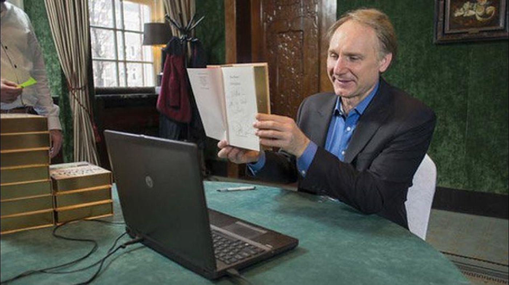
Une très grande documentation, un esprit de rigueur et le sens du suspens signent, une fois de plus, le dernier ouvrage de Dan Brown, « Origine », aux éditions Jean-Claude Lattès...
Un récit que j'avais écrit à l'actrice française Anna Sherbinina, qui fut ma première lectrice, maintenant, c'est à votre tour de lire ma courte histoire...
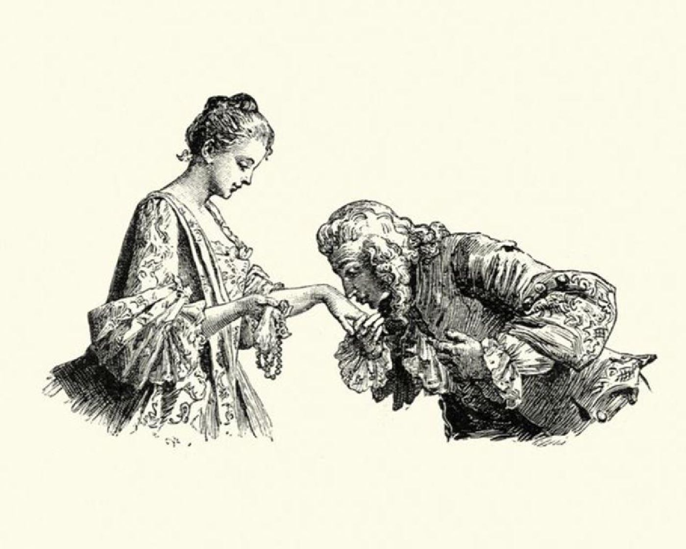
Les règles de la politesse sont des lois non écrites, mais auxquelles il est plus important d’obéir qu’aux lois écrites. Longtemps, les unes et les autres se sont complétées. Jusqu’à ce que les législateurs, enivrés par leur propre génie électif, entreprennent d’abolir et remplacer les premières...
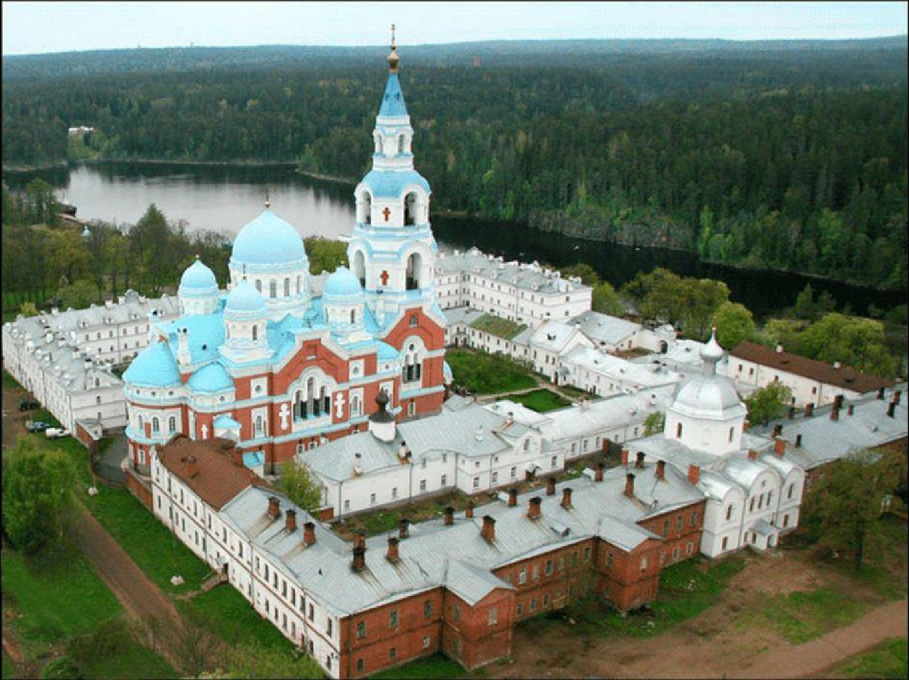
Les origines du Monastère de Valaam remontent à la période pendant laquelle le Christianisme commença à se répandre parmi les populations qui vivaient dans les terres russes. Le Monastère est connu sous le nom de l’archipel homonyme de cinquante iles qui occupent au total trente-six kilomètres carrés du lac Ladoga. Le lieu de culte est dédié à la Sainte Transfiguration de notre Sauveur, mais les gens l’ont toujours appelé Monastère de Valaam...
« Nej, nej, nej, jag är inte intressant. Schubert är intressant ! »
Ingmar Bergman, Larmar och gör sig till
L'on survit tant bien que mal dans notre univers occidental où la laideur, la stupidité, l’illettrisme, l’hystérie collectiviste, la perversité et la prostitution intellectuelle sont devenus des normes tyranniquement exigées...
« Aujourd'hui j'ai reçu une émouvante dédicace poétique en français par mon merveilleux fan de Montréal. (merci à toi cher Gaétan Bouchard ! ) Ça m'a immédiatement rappelé de lumineux souvenirs du charme incroyable des rues parisiennes, que j'ai eu le plaisir de visiter en octobre l'année passée. »
Dina Garipova...
« La soie de la mer se donne à nos pas,
le temps vente dans les branches accablées »
Ion Vinea...
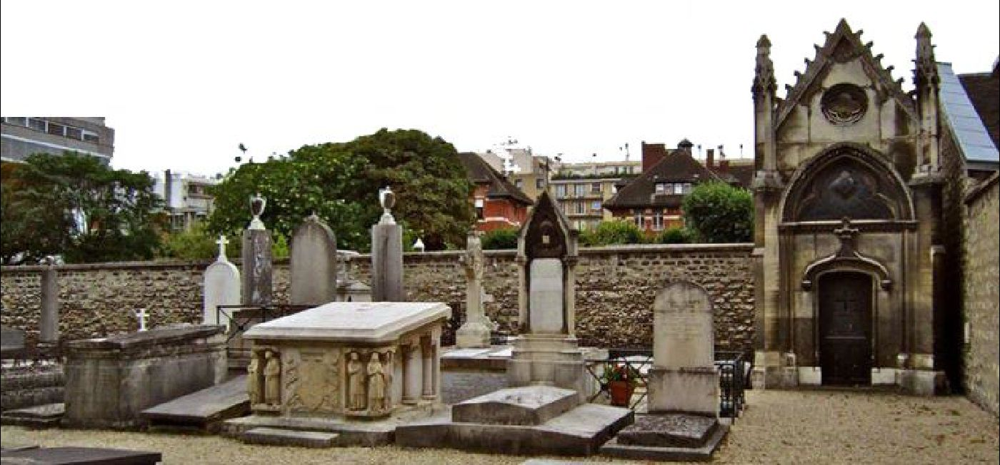
Paris, nouvelle Thèbes interdite à Bacchus,
Je suis ta nocturne ménade
Reniflant les odeurs du cimetière de Picpus,
Inhalant ses tombeaux-témoins, à un stade1...
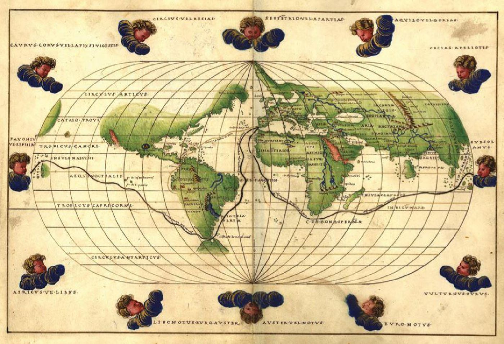
Dès la préface de son Magellan, éd. Grasset, Le livre de poche, Stefan Zweig, nous étonne...
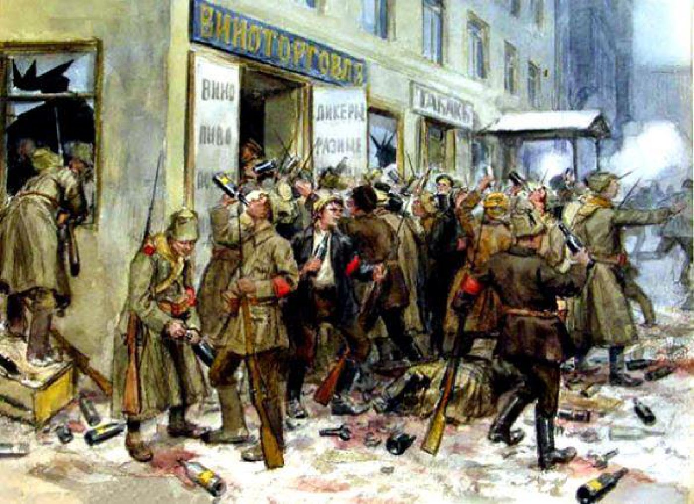
« Ce royaume des éléments désordonnés1 », - écrira sur la Russie Piotr Tchaadaïev dans ses réflexions philosophiques. Mais c’est surtout dans l’œuvre de Dostoïevski, plus particulièrement dans les Frères Karamazov, que le chaos russe fut le mieux présenté. L’auteur fait de ce dernier un élément fondateur du caractère national2...
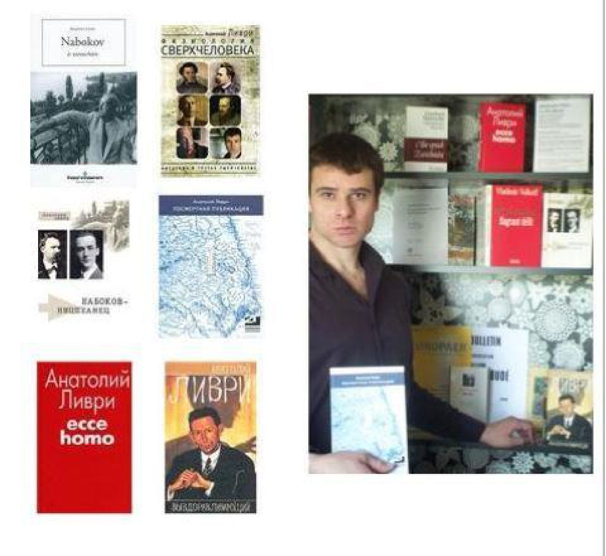
Chaque auteur se distingue par un style qui lui est propre et, pour pouvoir correctement l'analyser, il est nécessaire de disposer non seulement d'une méthode appropriée mais aussi d'instruments aussi précis que ceux d'une opération chirurgicale. Si un poète pense en images, son critique, tel est mon avis, doit suivre son exemple, d'autant plus quand il s'agit d'Anatoly Livry, un philologue aguerri et un spécialiste des lettres grecques, françaises et russes ainsi que de philosophie allemande. Cela m'oblige à considérer sa création en vers comme le travail d'un collègue universitaire et à examiner ses travaux scientifiques comme si ce docteur en littérature comparée (le titre doctoral lui a été décerné à l'Université de Nice-Sophia Antipolis) commettait ses découvertes inspiré par le Verbe poétique...
J’ai écrit, traduit, « rewrité », mis en pages, conçu, retaillé ou rapiécé des milliers de livres dans ma vie. Je ne suis l’auteur que d’une dizaine d’entre eux. Seuls deux, pour le moment, sont des œuvres de fiction : Le Miel et Le Rayon bleu...
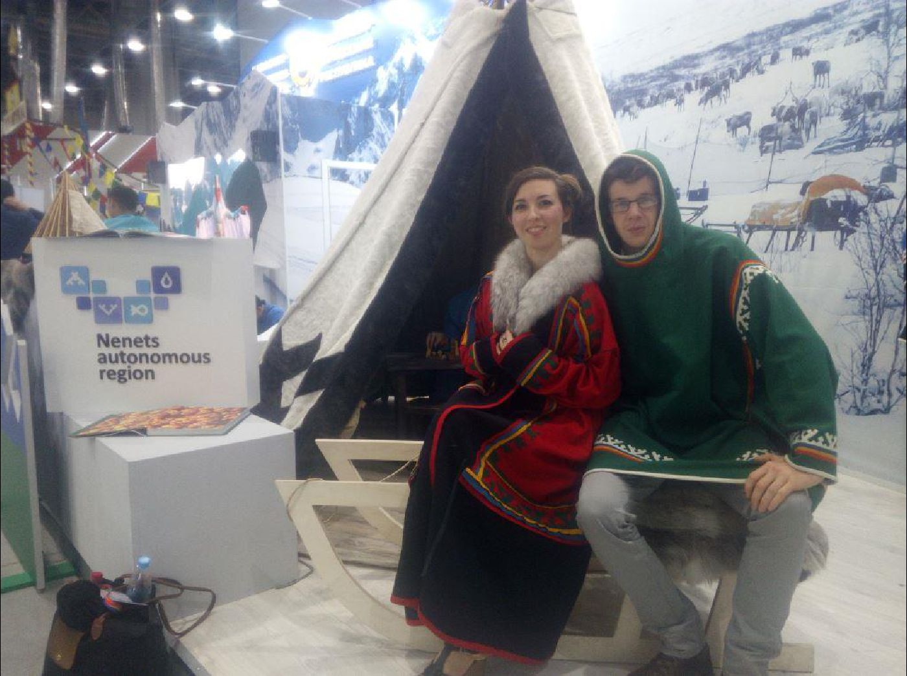
Pour terminer leur voyage en Russie, Antoine et Roxane se sont rendus à Sotchi le 14 octobre pour participer au XIXe Festival Mondial de la Jeunesse et des Étudiants, qui se terminait le 22 octobre 2017...
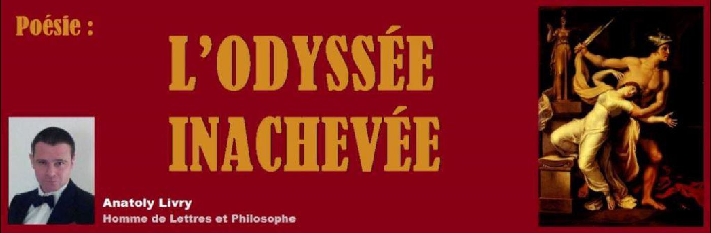
Vers l’Orient aspiré par le trot, en berline,
Aux sabots des chevaux il murmure son spleen :
« Mon midi, Mont… médy… ». Attention à l’arque !
Serre ta bride plus ferme et savoure, hipparque,
Le presto exquis de cette course-tarentelle...
Ô mon pays de fleurs lointaines,
Épars est le vent qui souffle
Dans tes branches élevées ;
Tes cimes orageuses caressent
Un ciel rouge, soleil de l'aube...
Chers amis lecteurs de Méthode,
Je parlerai aujourd’hui de trois romans d’Amélie Nothomb pour faire suite à ma rubrique précédente...
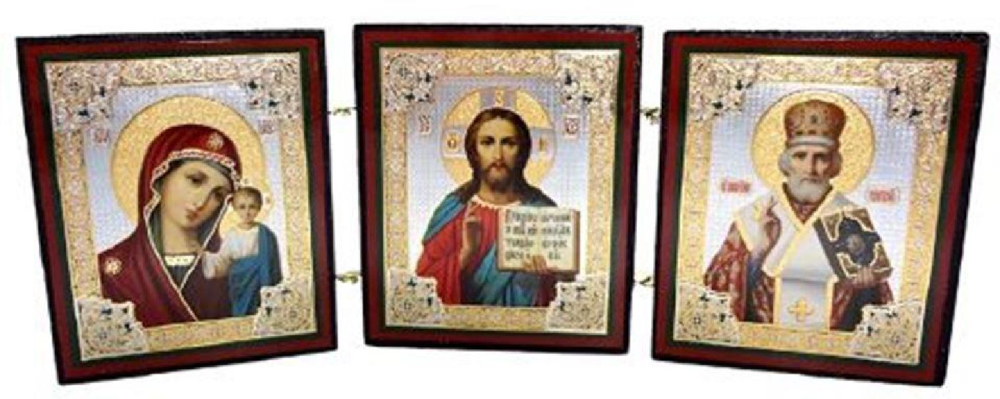
Le mot icône tire ses origines du terme grec « eikon » dont la signification est : image...
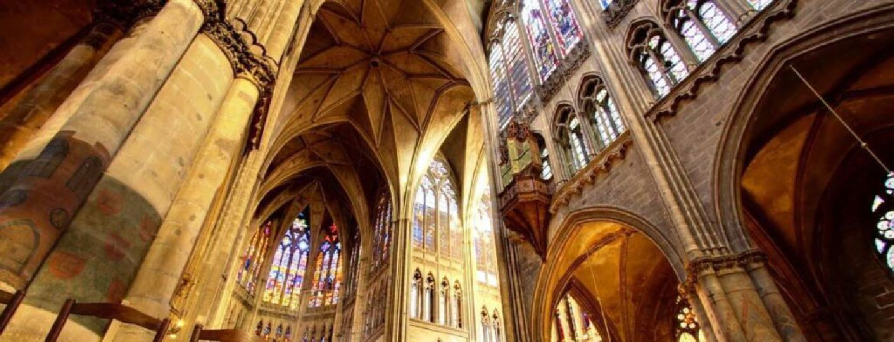
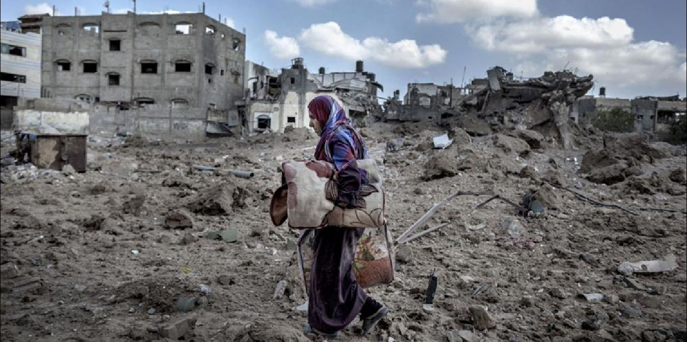
Mon poème a été récité à Montpellier en France le 8 juillet 2015, à la Veillée GAZA STOP BLOCUS, Place de la Comédie. Dédié aux victimes palestiniennes des frappes israéliennes sur Gaza...
Réveillé un matin triste aux couleurs d’hiver.
Ne pouvant bouger. La bouche pleine de terre...
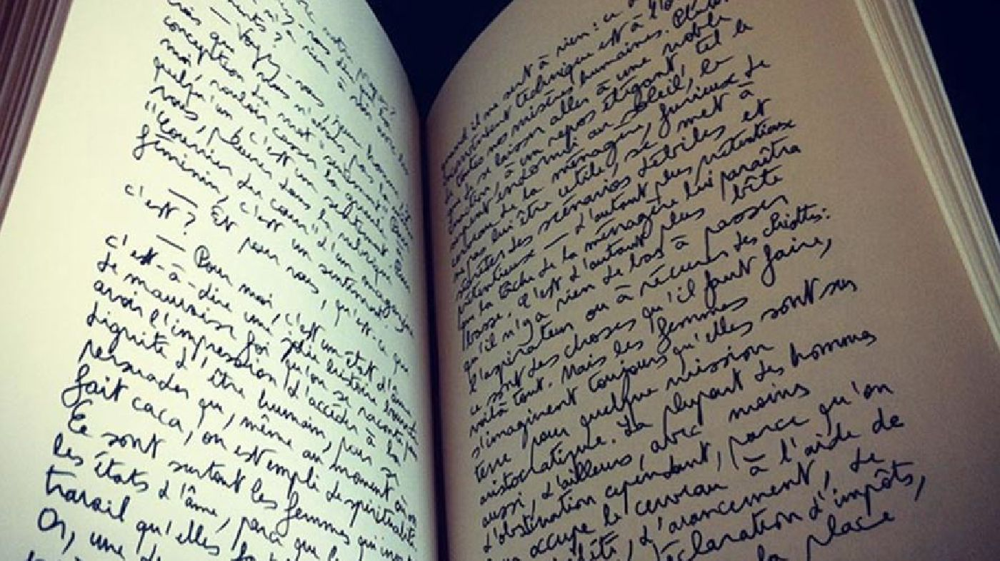
Amélie Nothomb est une exception dans la littérature moderne de langue française. J’ai lu une grande partie de ses ouvrages mais pas la totalité...
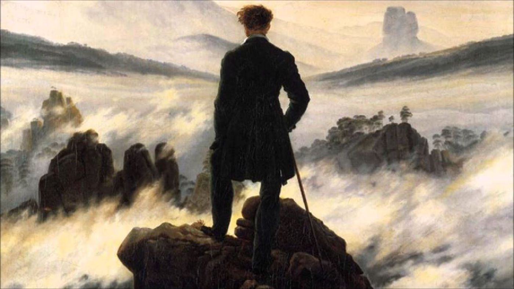
Les temps modernes. Les hommes n’aiment pas la liberté. Ils préfèrent le pain, la télé et la sécurité, et mourir à l’eau tiède.
Dostoïevski…
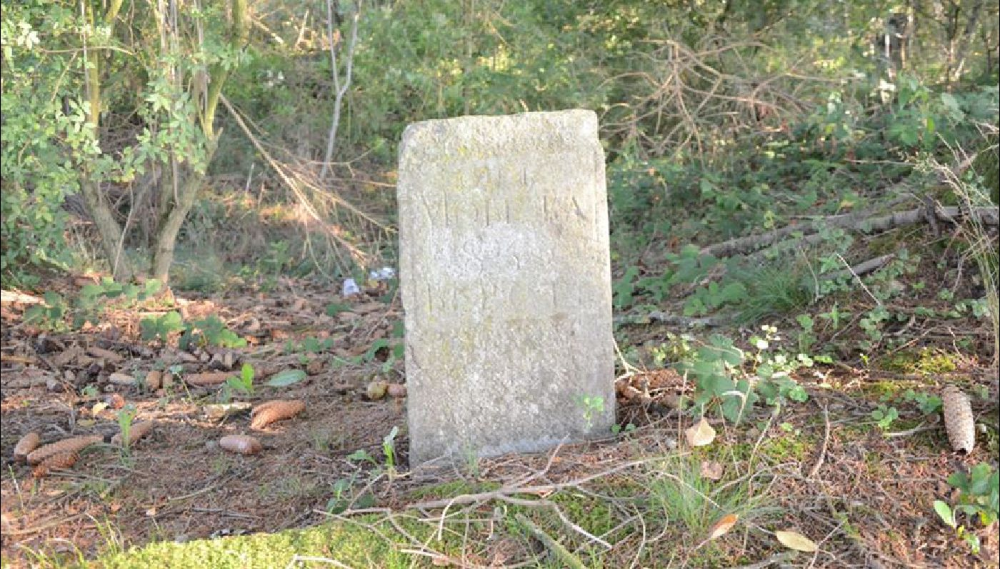
Chers amis,
Comme vous le savez, il y a une page commune dans l’histoire de la Russie et de la France, c’est occupation russe en France de 1816 à 1818...
Elena SYDOROVA : Depuis plusieurs années vous réalisez des fouilles archéologiques à AGUILCOURT dans la Marne afin de mieux connaître le destin des soldats du Corps expéditionnaire russe combattant durant la Première Guerre mondiale...
Je reviens de trois semaines de voyage dans « L’Or des Tsars », transsibérien mythique pour un voyage d’exception de Moscou à Pékin...
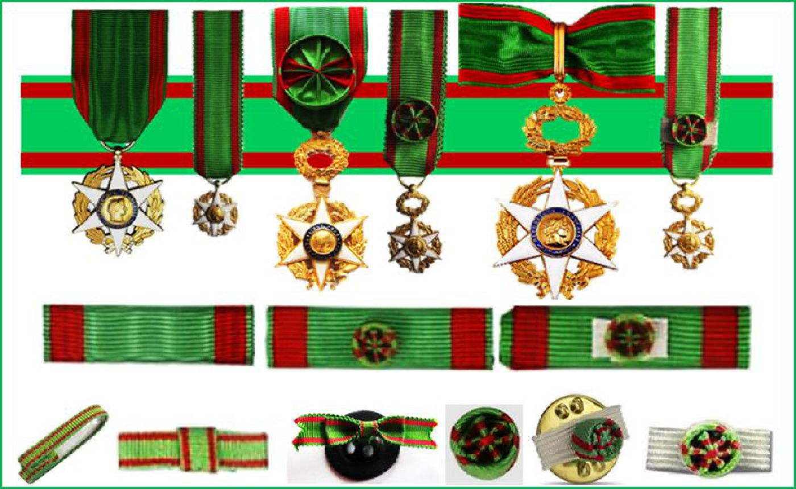
LA LÉGION D’HONNEUR AGRICOLE
L’ordre du Mérite agricole ou « Légion d’honneur agricole », ou « médaille des champs » ou « Poireau », selon ses différents diminutifs, est l’un des plus prestigieux des ordres ministériels français avec l’ordre des Palmes Académiques, l’ordre du Mérite maritime et l’ordre des Arts et des Lettres...
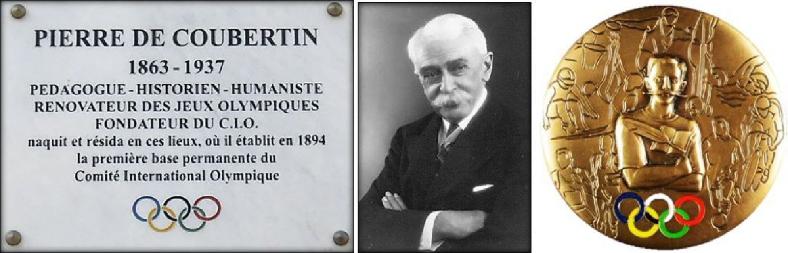
Tout le monde, ou presque, connait Charles Pierre de Fredy, baron de Coubertin né le 1er janvier 1863 à Paris et mort le 2 septembre 1937 à Genève (Suisse). Ce brillant élève des Jésuites - dont la famille était d’origine italienne, fut anoblie au XIV° siècle et fait baron au XIX° - se destinait au métier des armes...
Dédié aux peuples qui luttent pour leur liberté et leur indépendance
J'offre ce poème à la belle et courageuse rose du désert, Asma el-Assad, première dame de Syrie, à l'occasion de son anniversaire de naissance du 11 août. Quand j'ai écrit ce poème, j'ai pensé tout particulièrement aux peuples: palestinien, syrien, donbassien, québécois, yéménite, il est cependant destiné à tous les peuples épris de liberté et qui luttent pour la conquérir...
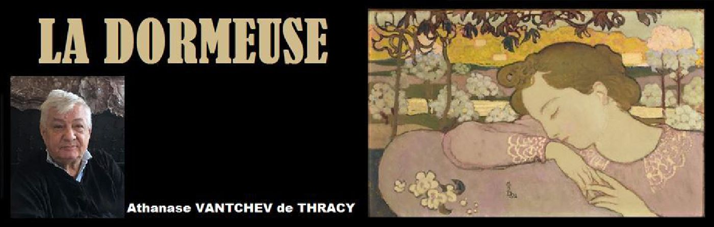
À Pierre Furnius
« Non seulement chaque étoile, mais chaque élément émet des rayons qui se modifient en fonction des rapports variables entre les étoiles ou les autres éléments, et les objets soumis à influence »
Al-Kindi...
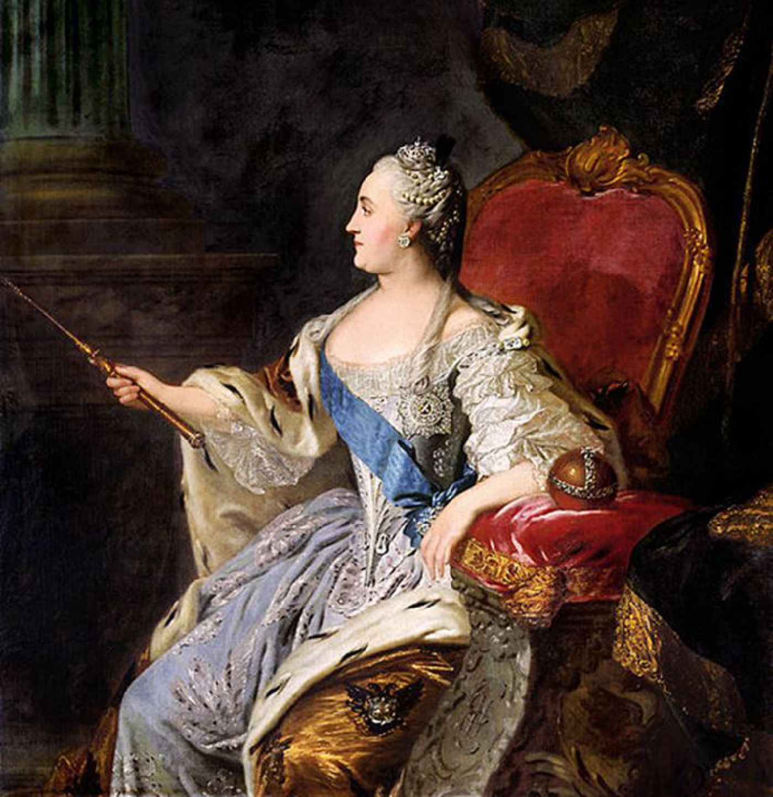
Il existe des centaines d’ouvrages consacrés à Catherine II, plusieurs d’entre eux sont cités dans la bibliographie à la fin de l’ouvrage d’Henri Troyat, Catherine la Grande qui a paru pour la première fois en 1977. Il existe aujourd’hui en collection de poche (J’ai lu - Flammarion) et occupe pas moins de 500 pages. Une chronologie récapitulant les principaux événements de et dans la vie de Catherine figure également en fin d’ouvrage. Cette chronologie met en parallèle ce qui se passait alors en Russie, dans le monde et la vie de l’esprit. C’est un indispensable outil pour se repérer dans le monde si complexe et si mouvant du dix-huitième siècle...
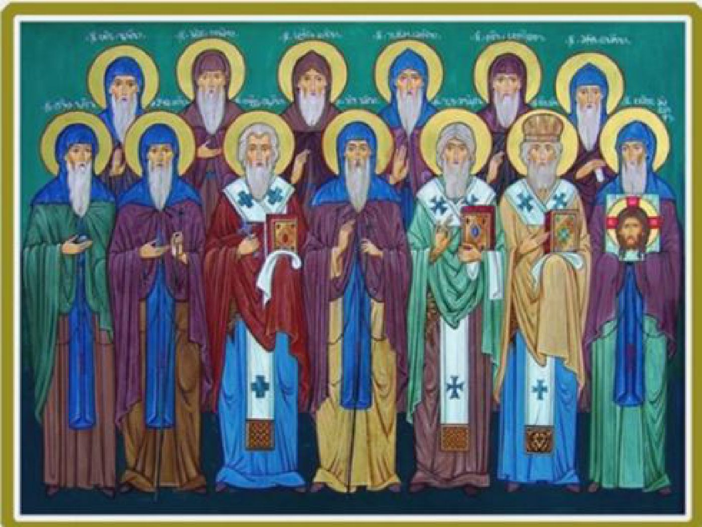
La chose importante par laquelle je souhaiterais commencer ce texte est l’affirmation que la littérature russe est plus que de la littérature. Elle est bel et bien gardienne de l’Évangile. La portée didactique de la littérature russe est très forte et j’expliquerai plus loin pourquoi...
Paris, est une noble dame très âgée,
Qui a gardé avec soin tout son charme,
Toute sa grâce, toute sa radieuse beauté,
Malgré ses nombreux drames et larmes...
Mélancolie, Défunte Rose,
Sous la Lune, va fleurir de Roses
Celui à qui j’ai tant pensé jadis...
A ceux qui n'ont pas compris.
Tel est le titre de la dédicace du livre que je viens de refermer : « Guerilla » de Laurent Obertone - le jour où tout s'embrasa....
LE BÛCHER DES VANITEUX
Éric Zemmour nous livre la suite de ses chroniques matinales, l’année 2011 sur RTL, dans Le bûcher des vaniteux, éditions Albin Michel...
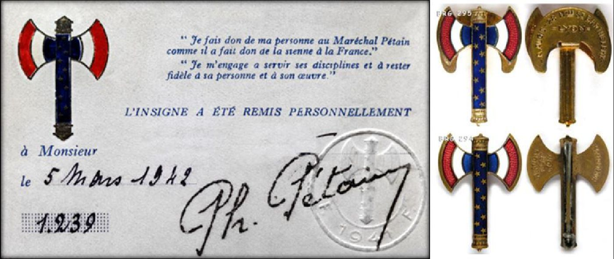
Nous avons souvent dit que la création d’un ordre national, n’était pas tant destinée à récompenser les mérites, qu’à s’attirer la fidélité des élites d’un régime politique...
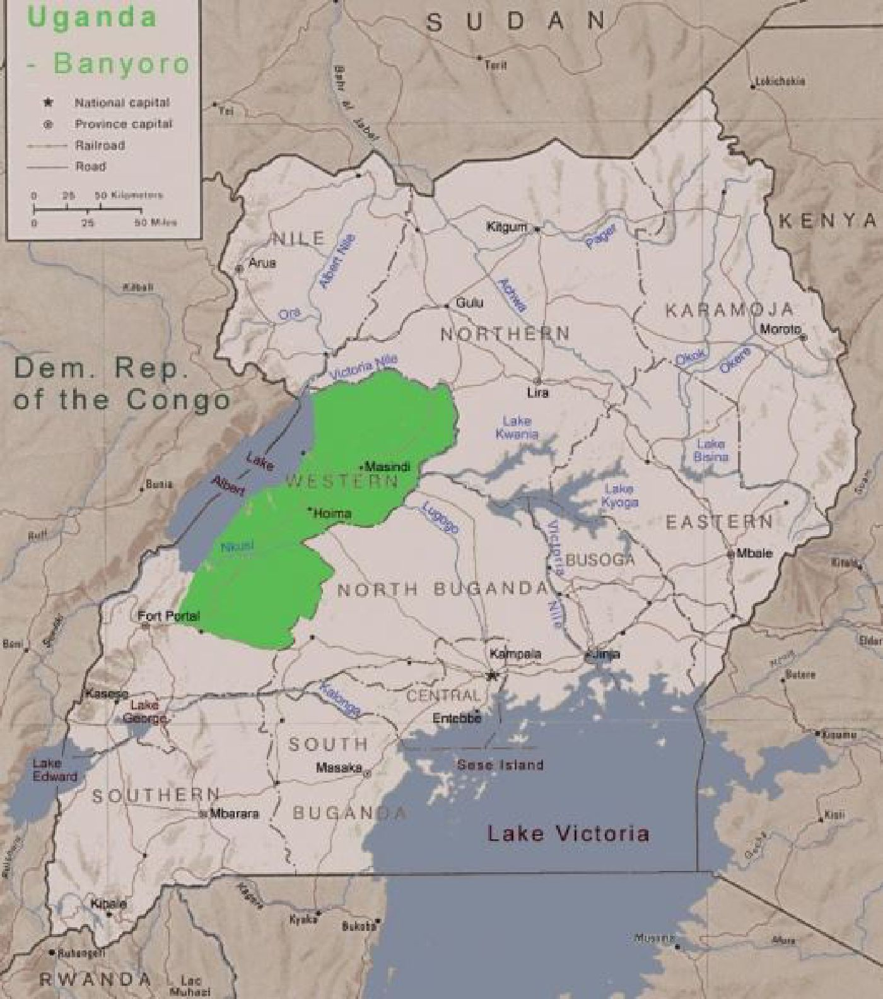
Le royaume de Bunyoro-Kitara est situé à l’ouest de l’Ouganda. Il fut l’un des royaumes les plus puissants d’Afrique centrale et orientale du XIIIe au XIXe siècle...
Le palmier appartient dans le classement des arbres à la famille des monocotylédones. Le domaine d’évolution naturelle de ces arbres correspond aux régions tropicales et subtropicales...
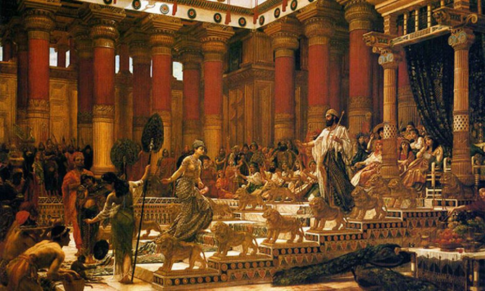
Qui suis-je pour être aussi absente de ma Vie ?
Qui suis-je pour être si présente dans la tienne ?
Je partirai de cette Terre,
En menant ma Prière,
Retrouver mon Amant d’hier
Enfoui sous cette terre,
Le délivrant de l’hiver...
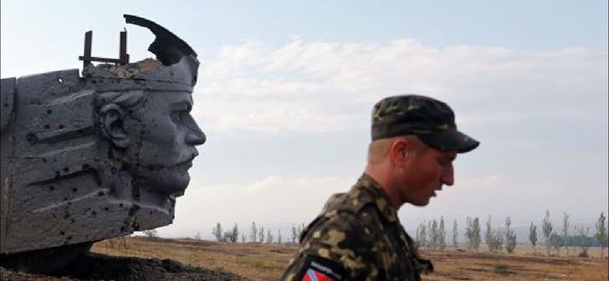
Sous la flamme vous reposez,
Éternelle est votre gloire,
Dormez dans la nuit étoilée,
Nous chanterons votre mémoire...
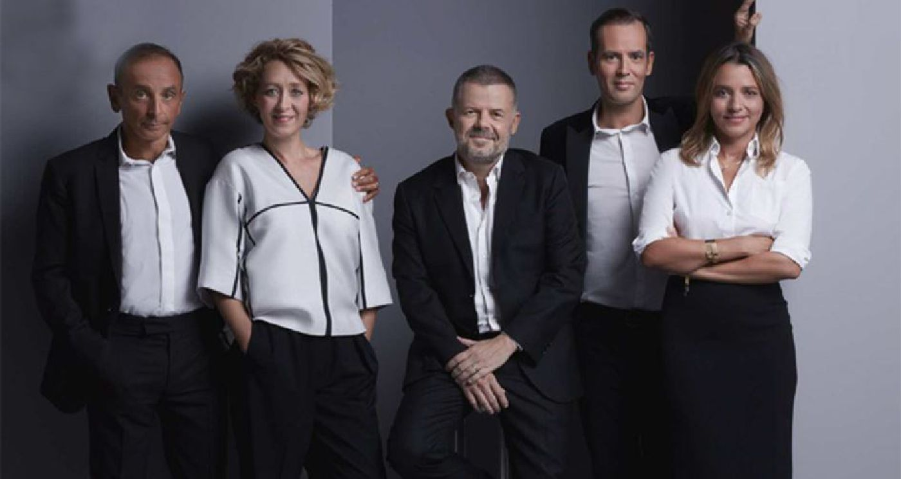
Éric Zemmour est sans doute le polémiste le plus actif et le plus détesté par une grande partie de la bienpensance française. Il connaît par cœur le trajet de son domicile à la dix-septième chambre correctionnelle du tribunal de grande instance de Paris...
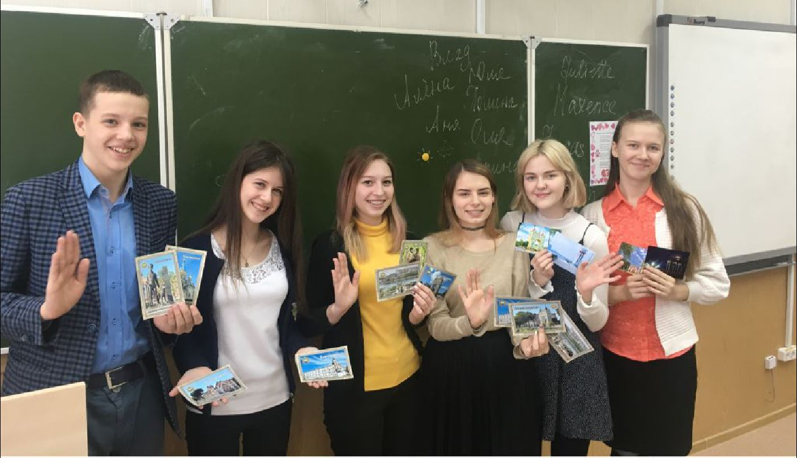
LE PRINTEMPS DES MOTS
Cette année les étudiants de la première année de l’Université pédagogique de Blagovechtchensk ont participé à la manifestation « Printemps des mots » organisée par la commune de Fontenay le 26 mars dernier...
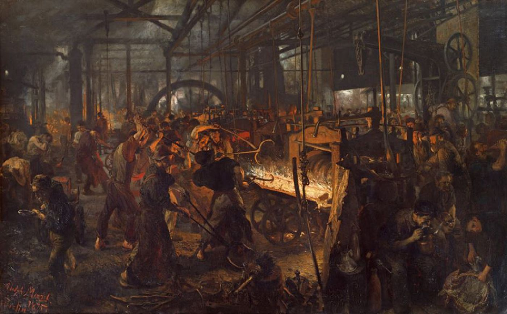
L’image de la Russie en France a une longue histoire. Pendant très longtemps, l’Empire russe fut presque inconnu à l’étranger. La situation change vers la fin du XVIIIe siècle...
Nous pouvons vraiment affirmer que la Russie, après la conversion au Christianisme de sa population, fut une Terre bénie par le Seigneur. La principauté russe de Vladimir, qui adopte le Christianisme de rite byzantin, devint un Pays unique au monde...
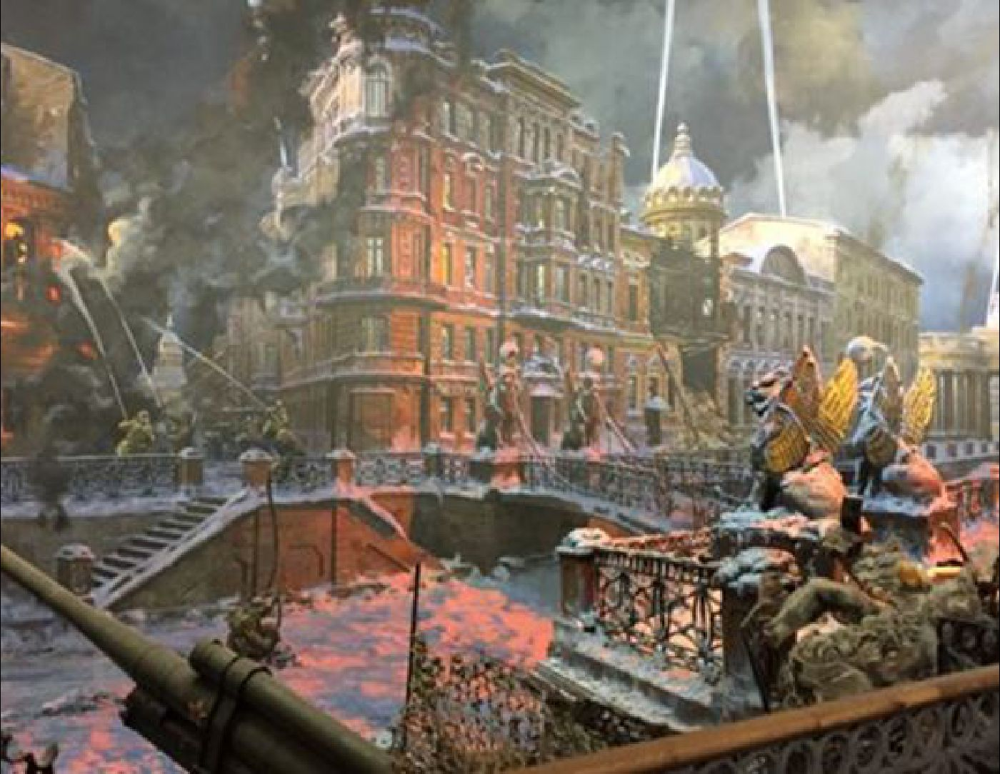
Salut, cher voyageur, chère voyageuse. Je suis très heureuse de vous retrouver dans ce nouvel article. Aujourd’hui, je vous amène avec moi pour une visite, et pas n’importe laquelle : la visite du musée de la Grande Guerre Patriotique de Moscou...
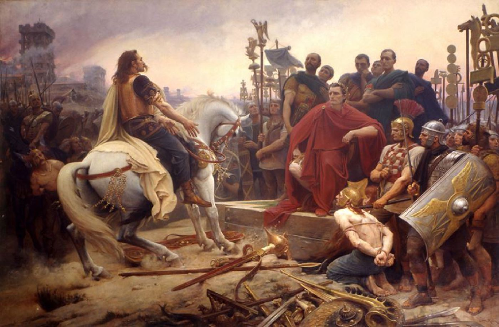
Pour l’Occidental moderne, la vie en communauté constitue au mieux une expérience hippie, ou, au pire, est le fait d’un sombre groupuscule sectaire à tendance suicidaire...
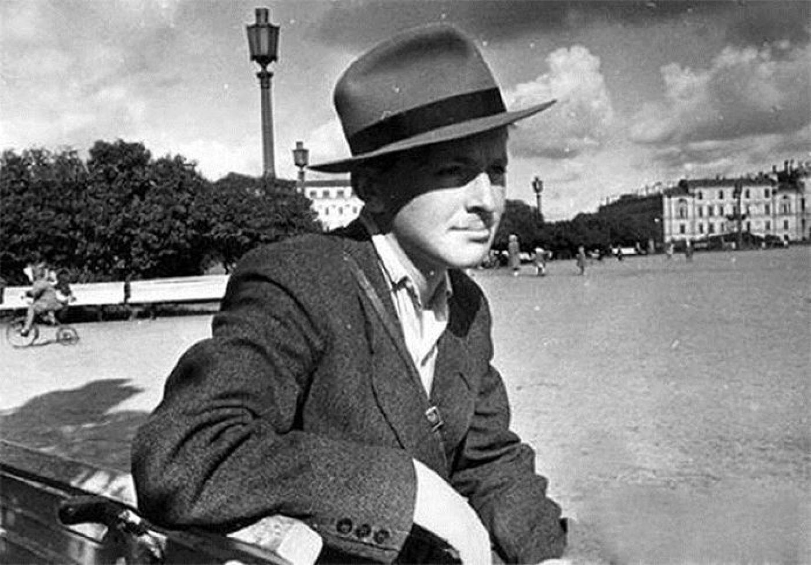
Les larmes ont tant tissé
De révolutions enchanteresses
Pas de progrès...
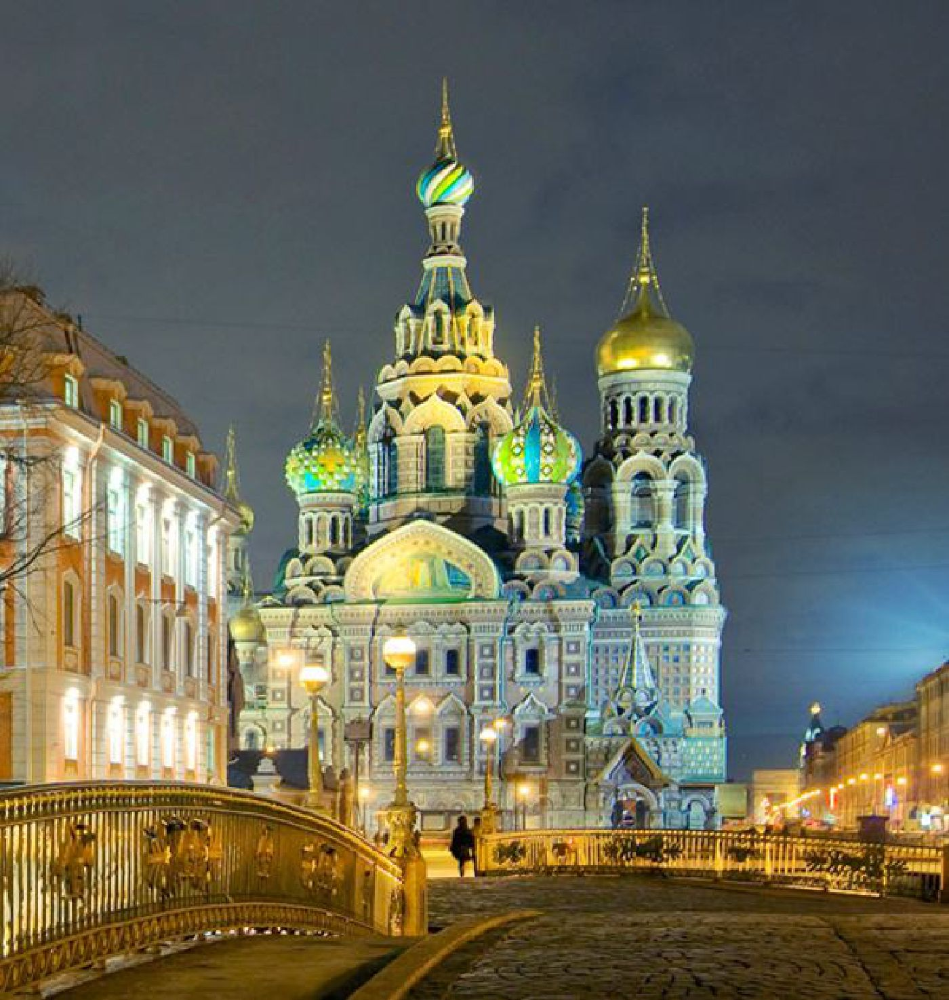
Dédié à mon amour éternel : Saint-Pétersbourg
Ce poème raconte une histoire vécue, quand j'étais dans la marine de guerre canadienne, nous sommes allés en visite à Saint-Pétersbourg, qui s'appelait à l'époque Léningrad...
Nous célèbrerons dans quelques mois la Révolution d’Octobre. Un centenaire. Oui, c’est cela, comme un centenaire abandonné dans une maison de vieux, et quelques vers fredonnés par des lèvres anxieuses et affaiblies…
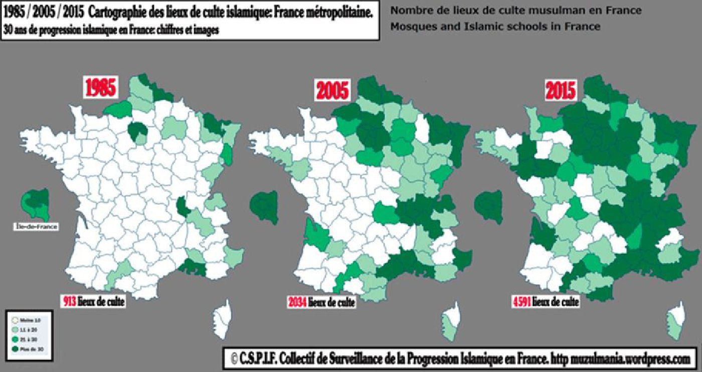
Le dernier ouvrage de Philippe de Villiers, « Les cloches sonneront-elles encore demain ? », éd. Albin Michel, frappe fort dès le début...
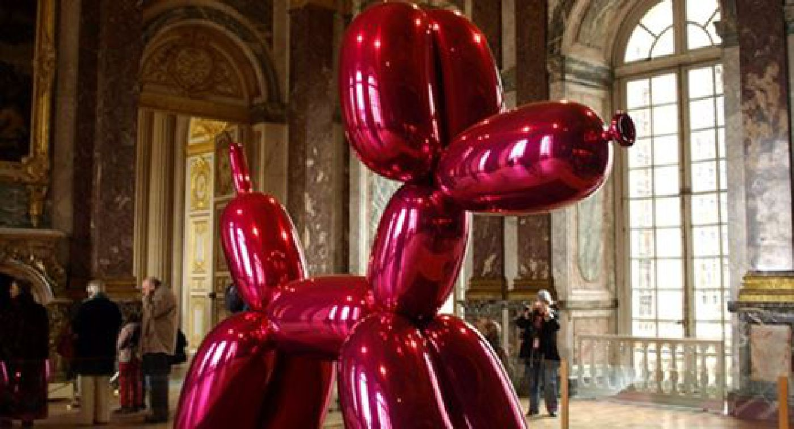
NOUS NE VOULONS PLUS DE BEAUTÉ SANS VÉRITÉ
Le temps des Claude Léveillée, Gilles Vigneault, Jean Ferrat, Jacques Brel, Édith Piaf etc., une époque bien révolue, où les chanteurs et chanteuses du Québec et de la France nous chantaient encore, notre réalité...
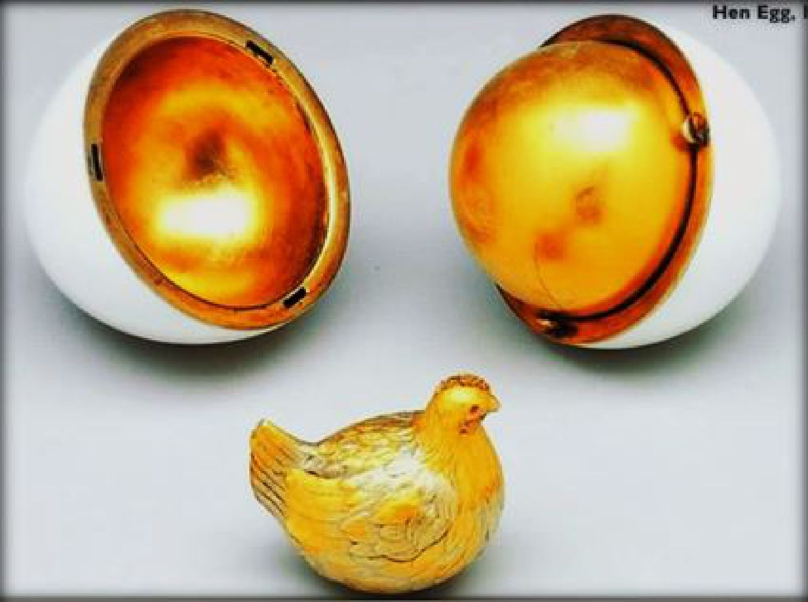
Comme me le faisait remarquer dernièrement ma chère amie Helena Sydorova, cette année les fêtes de Pâques Catholiques et Orthodoxes tombent le même jour soit le 16 avril 2017...
La conversion de la Russie au Christianisme remonte à l’an 988. Déjà en 867, le Patriarche de Constantinople communiquait aux autres religieux orientaux le grand intérêt du peuple russe pour la religion chrétienne...
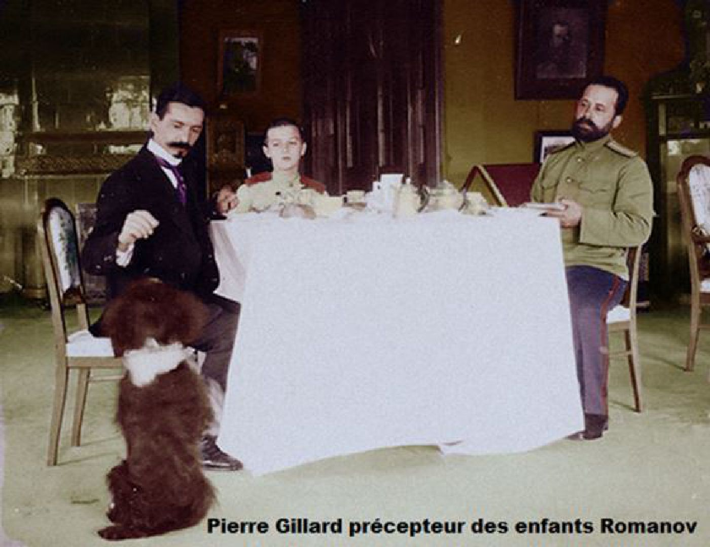
Dans la seconde moitié du XVIIIe siècle, quand la langue française, à l'heure de sa «deuxième universalité », se répand dans les cours européennes, la société russe se plie à cette mode avec une docilité particulière...
Des certitudes acquises depuis des siècles concernant la tradition biblique sont aujourd’hui mises à mal au regard de recherches archéologiques modernes...
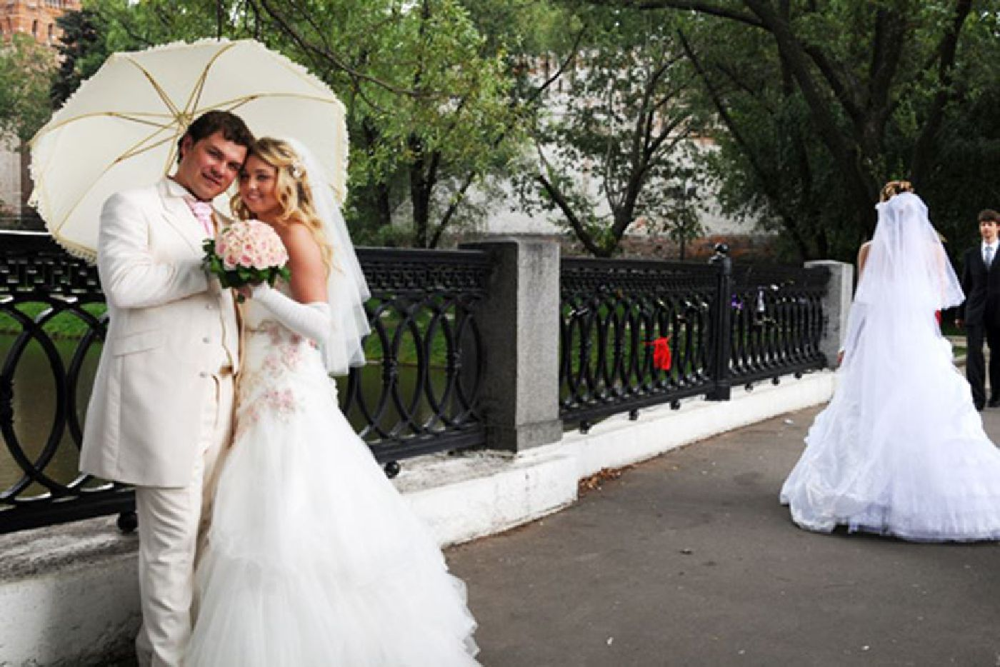
Salut, cher voyageur, chère voyageuse. C'est Tiffany. J'espère que vous allez bien. Je suis très heureuse de vous retrouver dans ce nouvel article...
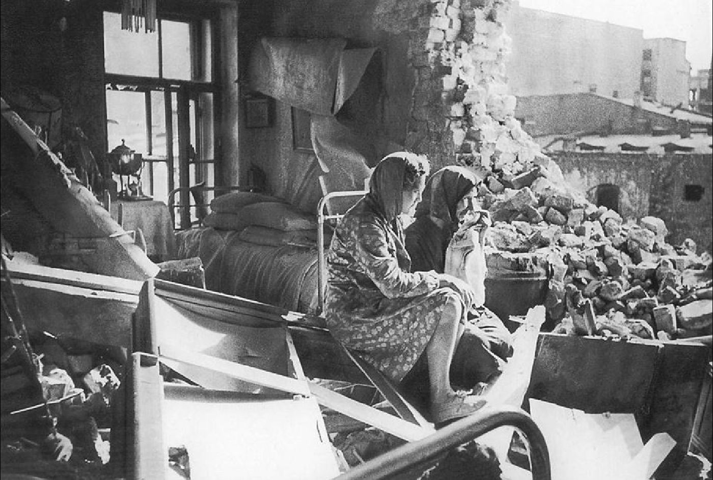
Ma grand-mère avait toujours dit que ma maman (sa fille) et elle avaient survécu au terrible siège de Leningrad et à la famine grâce à leur chat Vaska. Sans ce voyou roux, elle et sa fille seraient mortes de la faim comme plusieurs autres...
« La vérité est si obscurcie en ce temps
Et le mensonge si établi,
Qu’à moins que d’aimer la Vérité,
On ne saurait la connaître. »
Blaise Pascal – Pensées...
En hommage à tous les combattants antifascistes de la Deuxième Guerre Mondiale y compris ceux qui se battirent pour le République Espagnole...
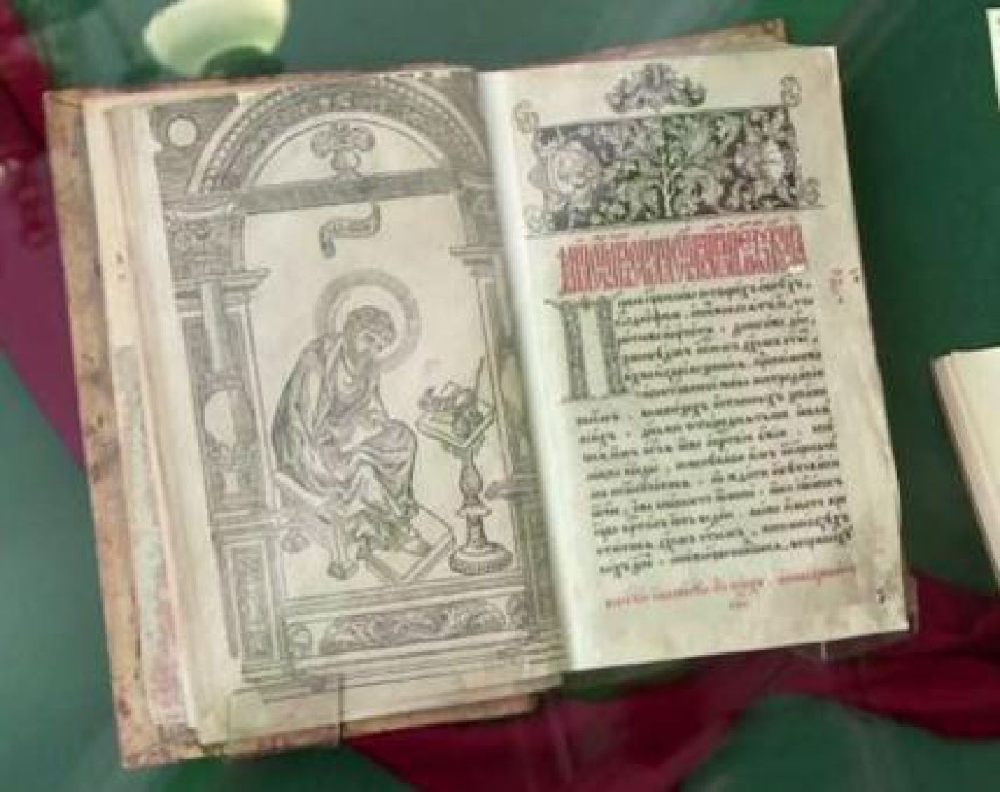
Il y a de grandes littératures telles que les Lettres anglaises, françaises et allemandes, tandis que la littérature russe est sainte1, oserons-nous dire en reprenant l’expression de Thomas Mann...
Plus de 850 pages, toujours d’une impression dense et serrée, pour ce dernier tome de la biographie de Charles de Gaulle par Jean Lacouture, éd. Points. Le volume est intitulé « Le souverain ». Il relate la période allant de 1959 à la mort du Général, survenue à La Boisserie en 1970...
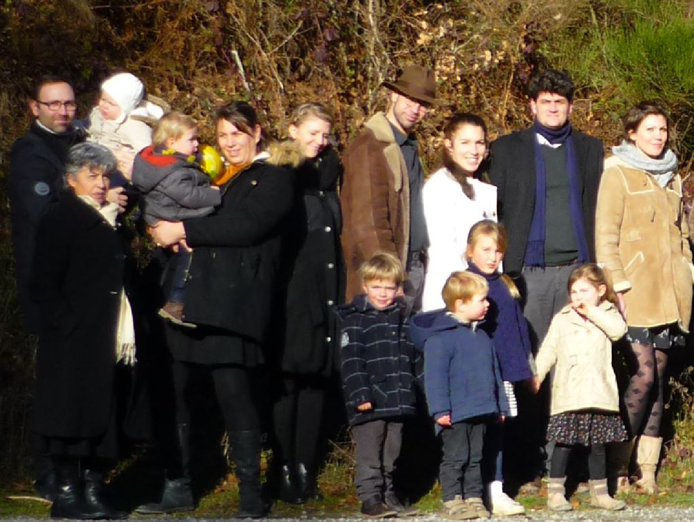
Après avoir exposé les raisons et les aspects théoriques de notre regroupement en clan, cette démarche peut encore rester abstraite pour nos lecteurs...
A Lyon, les profanateurs ont monté un spectacle où le rôle de Sainte Jeanne D'Arc est joué par une comédienne intégralement dénudée qui cavale en enfourchant son épée et finit ses jours non pas sur un bûcher mais dans un trou elle se fait pousser par une autre actrice, vieille femme, nue comme un ver...
Au Vatican, en Italie, à Monaco et dans de nombreux autres pays du monde, le Prince Stefan Cernetic1 est bienvenu et reconnu comme Son Altesse royale et impériale, descendante de S. Constantin le Grand et de l'empereur de Constantinople Angelo, Comneno, Ducas, Paleologo, Lascaris, Vatatze...
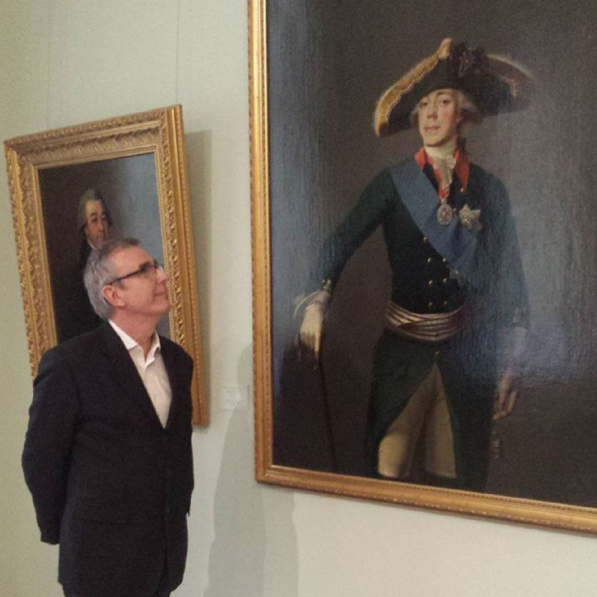
L’occasion de rencontrer le Prince Stéphane Belosselsky Belozersky, descendant en lignée directe de Rurik et des premiers Princes de Kiev, fut celle de pouvoir ainsi parler avec le Lieutenant Grand Prieur du Grand Prieuré Russe de l’Ordre de Saint Jean de Jérusalem et d’évoquer avec lui l’origine du Grand Prieuré Russe et des événements qui l’ont précédé...
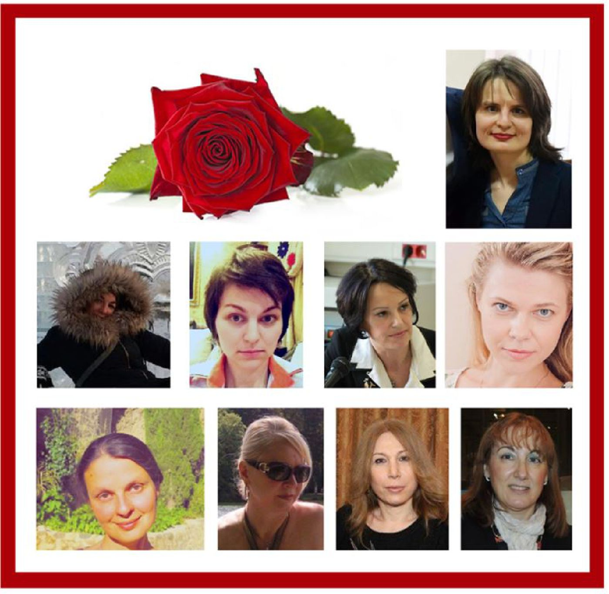
En ce mois de mars 2017, je n’oublie pas qu’une journée est spécialement dédiée aux femmes : la journée internationale des femmes, qui a trouvé naissance, ne l’oublions pas en Russie...
Salut, cher voyageur, chère voyageuse. C’est Tiffany. J’espère que vous allez bien. Je suis très heureuse de vous retrouver dans ce nouvel article...
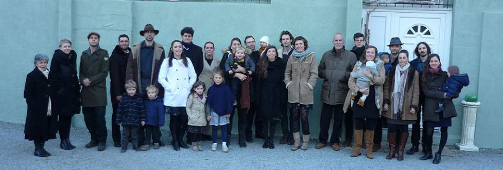
RAPPEL
Dans le dernier numéro, nous expliquions les raisons de notre regroupement en clan...
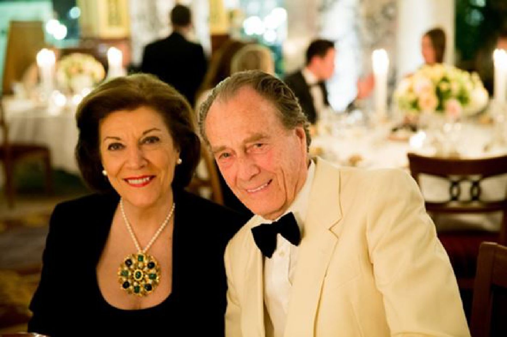
Le comte Pierre Cheremetieff évoque les origines du Conservatoire russe de Paris dont il est le conservateur...
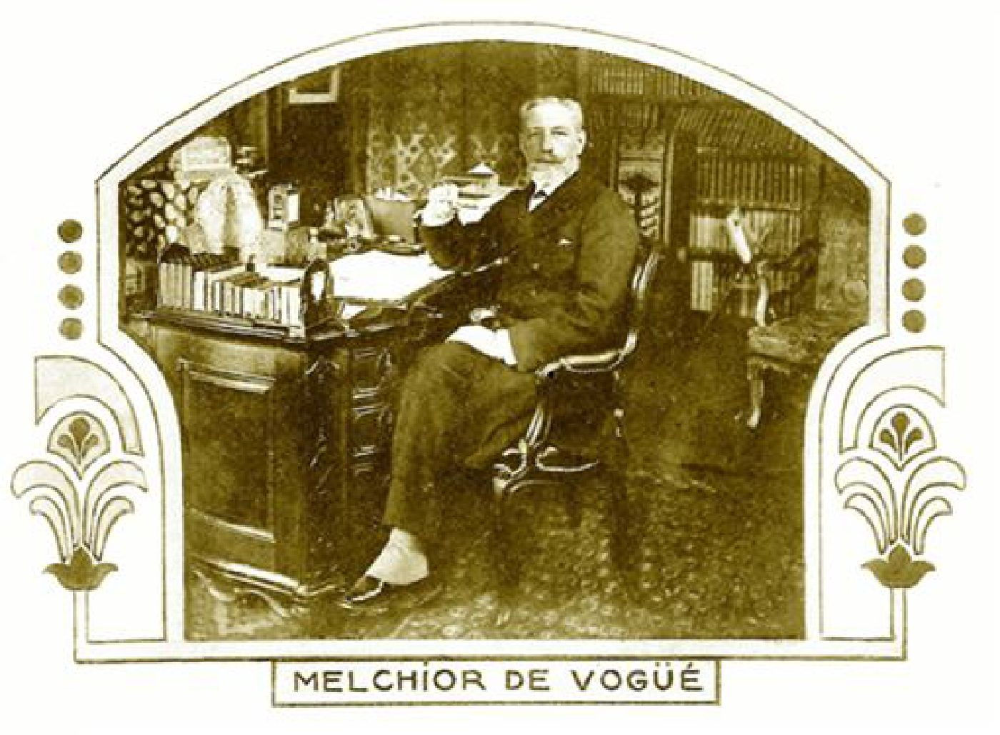
RAISON LITTÉRAIRE DE L’IMPORTATION DE LA LITTÉRATURE RUSSE EN FRANCE...
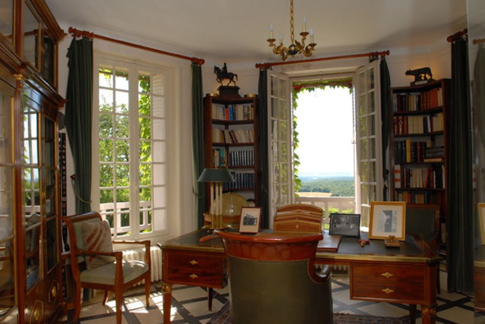
Un peu plus de 700 pages d’une écriture toujours aussi dense et serrée pour ce tome II de Lacouture sur de Gaulle publié en 1985 (éd. Points)...
Dédié par le poète québécois Gaétan Bouchard aux habitants de la ville de Donetsk, émeraude du Donbass et à ceux qui la défendent, qu'un million de roses refleurissent dans les cœurs de tous tes enfants...
Salut cher voyageur, chère voyageuse. C'est Tiffany. J'espère que vous allez bien. Je suis très heureuse de vous retrouver dans ce nouvel article...
Quel est cet homme qui se dresse
Contre le puissant qui l’agresse
C’est pas un héros romanesque
Car des millions sont avec lui
Laissez vivre la Russie
Laissez-la vivre sa vie...
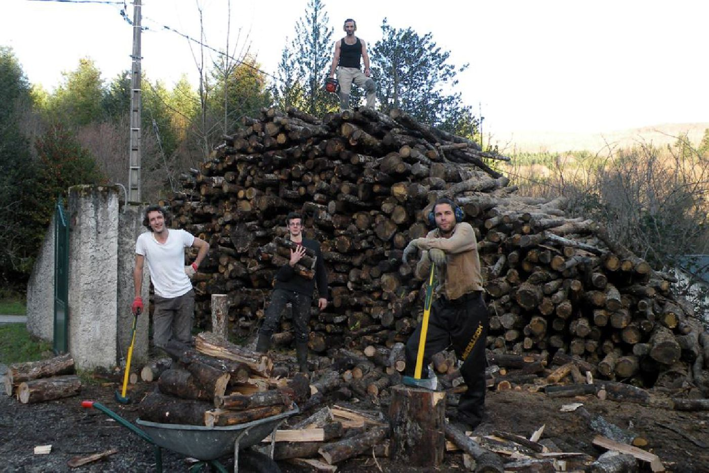
Après notre voyage au Donbass en octobre 2016, la directrice de la rédaction de ce journal, Elena Sydorova, nous a proposé de présenter notre mode de vie communautaire en plusieurs articles. Nous pensons avec elle qu’il est intéressant de présenter aux russes l’alternative de vie que nous développons en France car les Slaves sont mieux disposés à accueillir positivement ce qui relève d’un mode de vie communautaire que les gens de l’Ouest...
« Même si tu vis encore un quart de siècle tout sera pareil », – écrira Blok en 1912 dans son poème Pharmacie, réverbère, vent. Aujourd’hui, nous sommes témoins de la situation inverse. Nous vivons le moment de transition. « Le fondement sur lequel reposait la famille humaine depuis ses plus anciens essais d’organisation1 » est en train de s’effondrer...
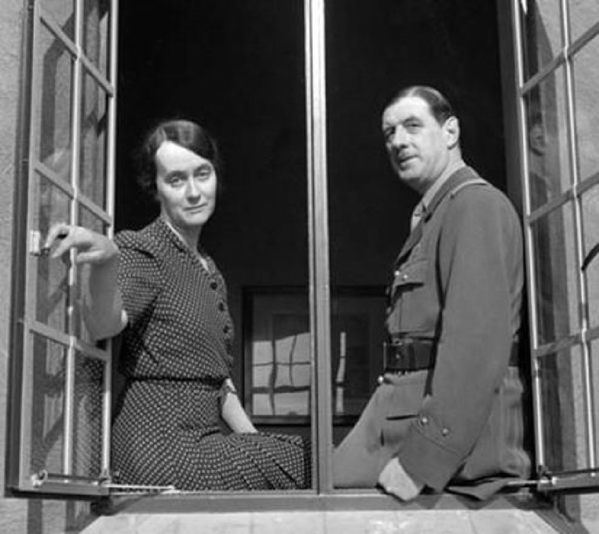
Tome I - Le rebelle
Pas moins de 870 pages d’une écriture petite et serrée, pour ce premier tome de la célèbre biographie de Jean Lacouture, « De Gaull », éd. du Seuil, collection Point. Ce premier opus couvre la période allant de la naissance (1890) du futur Connétable de France, jusqu'à la glorieuse et célèbre descente des Champs Elysées (1944)...
Le tome III
Le troisième et dernier volume de « C’était de Gaulle » de Roger Peyrefitte est plus affiné que les deux premiers tomes, non pas au niveau du vocabulaire ou des témoignages que fait l’auteur de ses entrevues avec de Gaulle ou ses mini-rapports des divers conseils des ministres...
L’Ordre National du Mérite. Etre chevalier au XXI° siècle
Paradoxalement l’Ordre National du Mérite créé le 3 décembre 1963, et dont nous venons de fêter le 53ème anniversaire, n’a que le 4ème rang dans l’ordre protocolaire des décorations françaises...
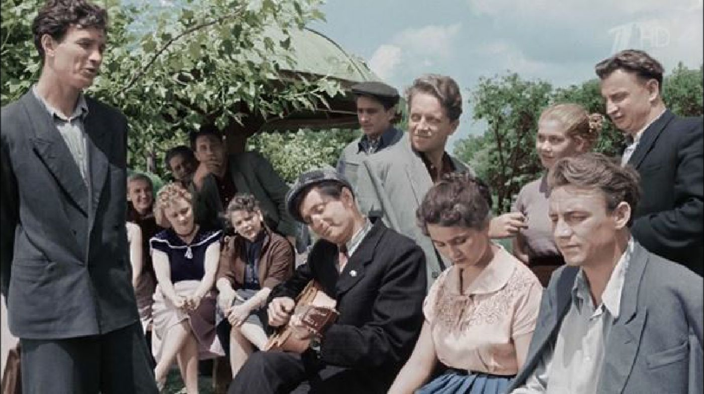
Le seuil d’une nouvelle année est toujours un moment privilégié pour l’espérance des temps à venir et le bilan de l’année passée, et ne transigeant pas à cette coutume universelle, je vous adresse ici mes meilleurs vœux pour 2017, surtout une santé d’acier pour pouvoir par vos actes réaliser par vous-mêmes vos rêves les plus chers...
Bonjour à tous. C'est encore Tiffany. Je suis très heureuse de vous retrouver dans ce nouvel article. Aujourd'hui, je vous emmène en voyage dans toute la Russie à travers le très célèbre train : le Transsibérien...
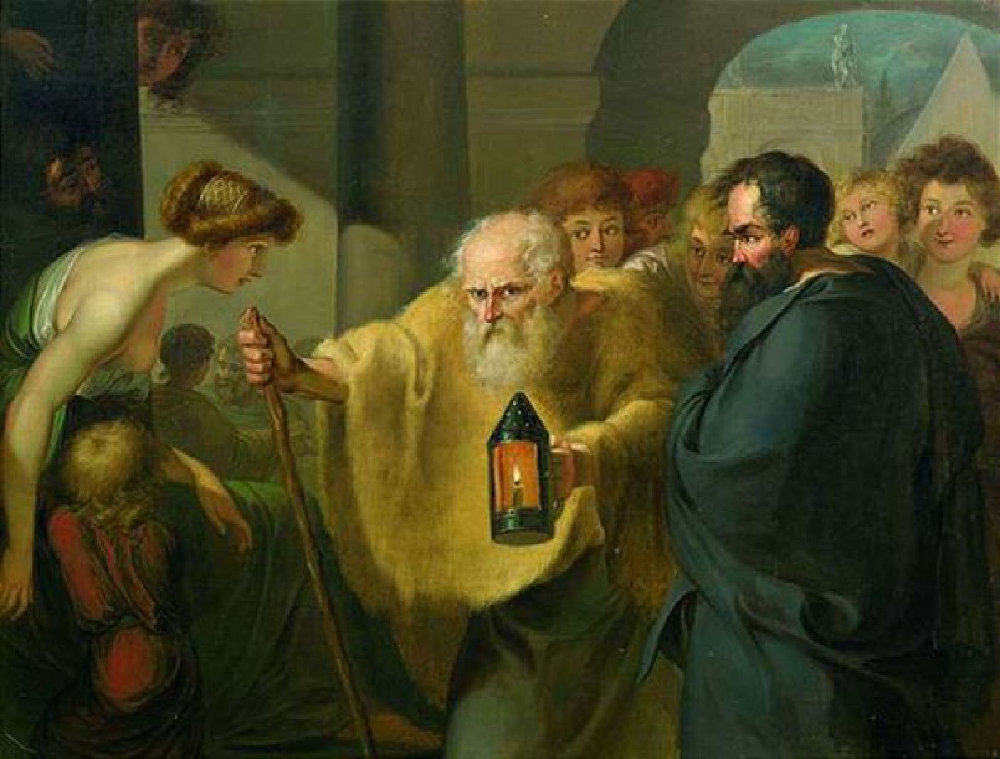
« L’homme est malheureux parce qu’il ne sait pas qu’il est heureux. »
F. Dostoïevski, Les Démons
La France d’Eugène-Melchior de Vogüé est en crise au moment où il présente à ses compatriotes les trésors de la littérature russe. « Ne voyez-vous pas, dit-il dans son Roman russe, que notre France s’étiole, que la volonté languit, et toutes les puissances de la vie avec elle ? Le remède est dans l’action1 ». Et il agit en important l’âme russe pour sauver l’âme française du désespoir...
10. Et le troisième ange sonna de la trompette ; et il tomba du ciel une grande étoile, brûlant comme un flambeau, et elle tomba sur le tiers des fleuves et sur les sources des eaux. 11. Et le nom de l'étoile est l'Absinthe ; et le tiers des eaux fut changé en absinthe ; et une grande partie des hommes mourut par les eaux, parce qu'elles étaient devenues amères.
Nouveau Testament. Apocalypse de St Jean...
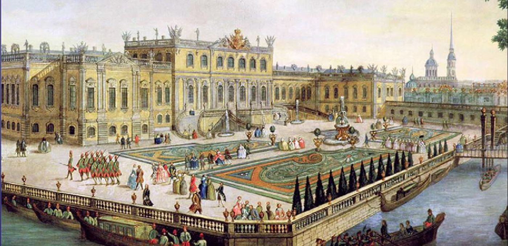
Умом Россию не понять,
Аршином общим не измерить:
У ней особенная стать —
В Россию можно только верить.
« On ne comprend pas la Russie avec la raison ;
On ne la mesure pas avec le mètre commun. –
Elle a pour soi seule un mètre à sa taille ;
On ne peut que croire à la Russie. »
F. TIOUTTCHEV, Умом Россию не понять (On ne comprend pas la Russie avec la raison)...
Charles de Gaulle est né en 1890 à Lille, il est mort en 1970 à Colombey-les-Deux-Eglises. Son nom est aussi connu en Occident qu’en Orient, au Nord qu’au Sud. Il marqua l’histoire du vingtième siècle de son empreinte de géant...
HISTOIRE D’UNE GENESE
Le 3 septembre 1939 alors que les nazis ont envahi la Pologne, contre toutes les prédictions d’Hitler, l'Angleterre puis la France décident à leur tour de déclarer la guerre à l'Allemagne : La 2ème guerre mondiale commence. S’ensuit ce que les historiens appelleront la « drôle de guerre » avec la capitulation de la Belgique le 28 mai 1940 et l’effondrement franco-britanniques (Lignes Weygand). L’armée allemande du III° Reich entre dans Paris le 14 juin et les français signent un cessez-le-feu...
Salut cher lecteur, chère lectrice. Je suis très heureuse de vous retrouver dans ce nouvel article. Aujourd’hui, je vous accompagne pour une première rencontre avec des citoyens russes...
Je crois de plus en plus à une montée de la tension russo-américaine pour l’année prochaine, qui pourrait déboucher sur une catastrophe. C’est comme pour les produits dérivés ; on ne s’arrêtera pas en si bon chemin, et c’est Hollywood qui va nous éclairer à ce propos...
Laurent Obertone a publié quatre ouvrages aux éditions Ring. La critique parle peu de ses livres. En France aujourd’hui un auteur qui parle de nation, de patrie, de primauté nationale ou dénonce les injustices, est soit laissé à l’écart du monde des lettres, soit voué aux gémonies littéraires ; exception faite bien sûr de ceux qui ont déjà un nom et assurent de bons tirages à leurs éditeurs...
La phaléristique peut être définie comme une science auxiliaire de l'histoire qui a pour objet l'étude des ordres, des décorations, des médailles et des insignes de distinctions. Phaleristique et politique sont traditionnellement intimement liées car la création d’un ordre ou d’une médaille n’est jamais anodine. Fort de cette conviction nous souhaitons montrer que l’histoire de la phaléristique Russe en est une brillante illustration...
C’est à un plongeon abrupt dans le monde des constructeurs de cathédrales que nous invite Ken Follet avec Les piliers de la terre, chez Stock, en livre de poche.
Une série télé a été tirée du roman, je ne l’ai pas vue ; mais l’époque, les actions nombreuses, l’aventure exaltante et la simplicité des personnages doivent donner un bon rendu cinématographique...
« Et il relut Kant, et il le comprit, ou crut le comprendre. »
BAUDELAIRE
On ne peut, on ne devrait, pour l’estime que tout un chacun serait consciencieusement porté à attacher envers sa propre personne, trouver le réflexe de qualifier un livre d’ennuyeux. La lecture n’est pas un divertissement. Plus précisément, elle peut s’accorder de contenir une part de divertissement, mais elle n’est et ne sera jamais purement qu’un divertissement, dépouillé de toute autre substance...
La Médaille « Pour la reconstruction des mines de charbon du Donbass » était une distinction civile d’Union soviétique créée le 10 septembre 1947 par décret du Présidium du Soviet suprême de l’URSS afin de récompense les efforts à la reconstruction des mines de charbon du bassin du Donetsk...
Le mercredi 2 janvier 2013 La Poste mettait en vente anticipée le timbre-poste commémorant le 50ème anniversaire du traité de l’Elysée au guichet temporaire, installé au « Carré d’Encre », 13 bis rue des Mathurins, dans le 9ème arrondissement à Paris puis dans les bureaux de poste à partir du 3 janvier 2013 ainsi que par correspondance. Ce document philatélique a été imprimé en 1,5 millions d’exemplaires, avec une pochette émission commune : 2 timbres français et 2 timbres allemands à 6,00 € et en unitaire au prix de : 0,80 €...
« Les tyrans ne sont grands que parce que nous sommes à genoux »
Etienne de la Boétie, 1549
Etienne de la Boétie, ce « Rimbaud de la philosophie » (1530-1563) a écrit vers l'âge de 16 ans un court essai intitulé « Discours de la servitude volontaire » et qui décrit au-delà des mécanismes de la tyrannie quelles en sont les éléments et le mécanisme constitutifs à l'apparition de la dictature.
Il ressort de cet ouvrage essentiel à une compréhension du monde moderne que non seulement il n'y a pas de tyrannie sans esclaves mais que ce sont ces derniers qui produisent les tyrans...
Emmanuel Carrère a obtenu le prix Renaudot, pour sa biographie d’Edouard Limonov, éd. P.O.L.
Lorsque Limonov écrivait dans L’idiot International, je me réjouissais de ses articles...
Et voici ce que Dostoïevski écrit dans son Journal (1873) que l’on peut lire en bon français sur wikisource:
« On sait que notre peuple est assez ingénieux, mais qu’il manque de génie propre ; qu’il est très beau ; qu’il vit dans des cabanes de bois nommées isbas, mais que son développement intellectuel est retardé par les paralysantes gelées hivernales...
CREATION DE LA MEDAILLE DE LA CITOYENNETE ET DU PATRIOTISME
Alors que tant de pays occidentaux cherchent à relancer un élan de civisme et de patriotisme dans la population civile pour soutenir les forces de l’ordre dans leur lutte contre le terrorisme on note qu’aucune distinction officielle ne récompense réellement les efforts de mémoires et de patriotisme engagés par de nombreux citoyens...
Créé durant l’été 2014, le groupe musical féminin « Les Brigandes » est diffusé par le site internet « Le Comité de Salut Public ». Ce groupe de sept femmes alliant la douceur des mélodies et l’originalité des clips avec des paroles incisives et dérangeantes fît rapidement un « buzz » sur les réseaux sociaux de la mouvance non-conformiste...
Voilà un roman qui ne se lit pas d'une traite : un pavé de 900 pages… qu'on a tout de même du mal à lâcher. Les bienveillantes, édition Gallimard, est le premier roman de Jonathan Littell, il a obtenu Le Prix Goncourt 2006...
Lorsque la seconde guerre mondiale éclate, le gouvernement français décide dès la fin septembre 1939, de créer une nouvelle croix de guerre selon les caractéristiques de celle de la Croix de guerre 1914-1918, afin de récompenser les combattants les plus méritants.
Cette croix de guerre, qui ne porte pas encore son millésime définitif, est une croix pattée en bronze florentin d’un module de 37 mm, à quatre branches, avec entre celles-ci deux épées croisées, pointes en haut...
Honorer la mémoire de ceux qui sont morts en France comme en Allemagne est un devoir...
Amis lecteurs, bonjour !
Je vous parlerai aujourd’hui de la dernière reine de France, Marie-Antoinette, par le biais d’une très bonne biographie, celle de Stefan Zweig, aux éditions Grasset, en livre de poche.
Je croyais le livre introuvable, car assez ancien, (la première édition date de 1932) mais il fut réédité plusieurs fois et on le trouve encore en librairie, ce qui est plutôt le signe d’un bon ouvrage.
JOUKOV, IMMORTALISÉ PAR DES PORTRAITS OFFICIELS
Archétype du héros militaire Soviétique, la propagande communiste rivalisera d’ingéniosité pour valoriser ce « tombeur » des armées nazies et à l’image d’un Patton, le maréchal Joukov sera très souvent représenté en portrait officiel par le régime, comme modèle pour le peuple russe.
Amis lecteurs, bonjour !
Je suis persuadé que vous allez vous demander, voyant le titre des ouvrages de ce mois-ci, « mais que viennent faire dans une revue universitaire des sciences et techniques des livres pour enfants, traitant de magie ? » Je ne suis pas sans savoir que le journal s’adresse en majorité à des scientifiques, étudiants ou enseignants. Je suis également persuadé qu’un adulte éclairé qui a un peu de bon sens tient pour billevesées qu’une baguette magique puisse se transformer en torche électrique. Une carte magique (la carte du maraudeur) sur laquelle on aperçoit des rues et des personnages figurés par des petits points lumineux déambulant dans ces rues, ne peut sortir que d’une imagination enfantine.
Vous avez raison : cette baguette magique s’appelle en réalité un « Smartphone » !
Instrument avec lequel vous pouvez tout à loisir localiser un lieu par satellite et vous y rendre, avoir une boussole, vous éclairer dans le noir, traduire une phrase, avoir le titre d’un morceau de musique en plaçant l’instrument magique devant la source sonore, parler et poser des questions à une immense banque de données et tout un tas d’applications qui n’ont d’autres définitions que celles de prodigieuses...
Alors qu’il existe pléthore de biographies sur des généraux comme George Patton ou Erwin Rommel, il n’existe que peu d’ouvrages consacrés au général Joukov (ou Zhukov) qui fut pourtant « LE » général de Staline et « LE » vainqueur de plusieurs grands généraux de Hitler...
DLF Bruxelles-Europe était au départ – est toujours – une délégation de DLF Internationale (Défense de la langue française), une association créée en 1958, dont le président est, traditionnellement, de l’Académie française. Le président actuel est Monsieur Xavier Darcos1 (http://www.academie-francaise.fr/les-immortels/xavier-darcos)...
Un ami me disait, récemment, qu’il était étonné par le nombre de Chinois qui visitaient l’Europe en général et la France en particulier et il se demandait ce qui poussait les Chinois en Europe et non pas au Japon, en Thaïlande ou dans d’autres contrées plus accessibles.
En essayant de trouver une explication qui aille au-delà des truismes habituels, je me suis rendu compte que la Chine a énormément influencé la France au cours des siècles, en particulier au 18e, et qu’il n’est pas sot de penser que la réciproque est vraie. Dès lors cette recrudescence de touristes chinois n’est-elle pas le signe d’un « retour, inconscient, sur investissement » ?
La création du titre de Maréchal de l’Union Soviétique
C’est en plein conflit de la seconde guerre mondiale (ou grande Guerre Patriotique pour les Russes) que le Présidium du Soviet suprême de l'URSS décida de créer par décret du 2 septembre 1940 fois une distinction intitulée « Etoile de Maréchal » ou « Маршальская звезда » en russe...
Michel Houellebecq est traduit dans le monde entier, il est un des écrivains français contemporains parmi les plus lus...
Sans jamais avoir été désigné comme emblème officiel, le coq en est pourtant aujourd'hui un des symboles représentant la France les plus populaires… On le retrouve dans notre culture, mais également au niveau du sport, et de l'histoire. Une telle place peut nous faire nous demander pourquoi le coq est l'emblème de la France...
Ceux de ma génération se souviennent certainement de la réponse faite par Coluche : « Parce que c’est le seul animal à pouvoir encore chanter les deux pieds dans la merde», soulignant tout à la fois ce chauvinisme souvent décrié par les nations étrangères et la situation dramatique dans laquelle la France se trouvait et se trouve malheureusement encore aujourd’hui...
La Bataille de Verdun
La bataille de Verdun commença officiellement le 21 février 1916 pour se terminer le 19 décembre 1916...
Notre rédacteur en chef adjoint, auteur d’une dizaine d’ouvrages historiques dont son dernier couronné par l’Institut de France, a produit, en dilettante, plusieurs poèmes dont celui que nous publions aujourd’hui qu’il écrivit au retour de la guerre en ex-Yougoslavie. « Amra » lui valut le « Premier Prix 1995 » du Centre européen de la Poésie et le « Prix Jean Moréas » du Grand Prix Littéraire du Luberon, en 1996.
Il nous a proposé d’exhumer ce petit poème parce qu’à la fois les victimes civiles dans le Donbass lui ont rappelé celles de l’ex-Yougoslavie et parce qu’il souhaiterait que les lecteurs de « Sans Frontières », notamment parmi les volontaires français, puissent avoir l’envie de retracer leurs impressions sous la forme de poèmes ou de nouvelles...
« À tout seigneur, tout honneur » c’est aujourd’hui de deux écrivains nés sous l’Empire Russe et de langue française que je parlerai. Tous deux ont fui la Russie lors de la révolution de 1918 et la littérature française ne s’en plaint pas ! Il s’agit respectivement d’Irène Némirovsky (née à Kiev) et d’Henri Troyat (né à Moscou). Curieusement, il y a un autre point commun dans les écrits dont je parle aujourd’hui : c’est la réquisition d’une maison française pour loger des officiers d’occupation. Le point de départ dans Le vin de solitude de Némirovsky se situe dans l’Empire Russe, dans La lumière des justes de Troyat le point de départ est Paris. J’ai découvert ces deux auteurs il y a quelques années. Pour la première ce fut un ami qui m’en conseilla la lecture, pour le second, une vieille édition au papier jauni attira mon attention lors du débarras d’une bibliothèque. Il est bien évident que je n’ai pas lu la totalité des ouvrages de ces deux auteurs, ni leur biographie détaillée. En ce qui concerne Henri Troyat, son œuvre est immense, pas moins d’une centaine d’ouvrages ! Il fut élu à l’Académie Française en 1959. Ce n’est donc pas une analyse littéraire comparée que je propose ici, mais juste une sensation de lecteur, un plaisir à partager...
Comme nous l’expliquons souvent dans nos articles, la phaléristique (ou histoire des médailles) sert souvent les projets politiques de celui qui institue une nouvelle médaille...
Le 3 décembre 1963, paraissait au Journal Officiel de la République Française, le décret N° 63-1196, publié au Journal Officiel le 5 décembre, instaurant l’Ordre National du Mérite, afin de donner « au Gouvernement (français) le moyen de récompenser des mérites ne présentant pas toutes les qualifications requises pour la Légion d’honneur »...
Pourquoi l'auto-stop ?
L'auto-stop diffère d'un voyage touristique, qui est habituellement tout planifié d'avance et strictement respecté pendant le voyage. Tout est connu d'avance : où vous allez, quel est l’itinéraire, dans quel hôtel vous serez logé et le programme des visites…
L’étoile de la Légion d’honneur, souvent à tort appelée « croix », est assurément l’une des décorations les plus connue dans le monde, au même titre que peut l’être l’étoile de Héros de l’Union Soviétique créée en 1934. Beaucoup de français, pensent que cette « médaille » de la Légion d’honneur a toujours existé, ignorant même les ordres d’ancien régime qui existaient en France avant la révolution de 1789...
Un événement d’une importance majeure a eu lieu récemment dans la culture mondiale du XXe et du XXIe siècle et dont l’importance n’est peut-être pas encore pleinement mesurée. Ainsi, pour la première fois, le triptyque de Nicolas Roerich (La Madone des Oriflammes, Saint-Serge et Saint-François d’Assise) a été réuni...
La ville de Paris et le Soleil
Dans la projection presque parfaite « du ciel sur la terre » dans le centre de la France, à première vue, il n'y a pas de place pour Paris - aucune étoile brillante ne lui correspond. Mais après un examen plus approfondi, il devient clair, qu’une seule des étoiles est en mesure de refléter le rôle et la grandeur de Paris – c’est l'étoile qui s’appelle le Soleil...
Yves Montand (le vrai nom Ivo Livi, né le 13 octobre 1921 à Monsummano Terme en Italie, mort le 9 novembre 1991 à Senlis en France) est un chanteur-chansonnier français et un acteur...
Les cathédrales et l’espace
La Cathédrale Sainte-Sophie à Constantinople (Istanbul) est devenue le plus majestueux monument de changement d'époques. Les contemporains de sa construction considéraient initialement cette cathédrale comme l'incarnation visible de l'espace. Lors de la construction de la cathédrale, cette idée s'est traduite non seulement dans sa composition d’autel, mais aussi dans ses dimensions, qui ne sont pas aléatoirement devenues la présentation d'échelle de certains principaux paramètres de l'espace environnant...
Après avoir jouées deux pièces classiques (« Le cheval évanoui » de Françoise Sagan et « Le voyageur sans bagage » de Jean ANOUILH) la troupe théâtrale « Libertinage » du Département Français des Sciences et Techniques de l’Université Nationale Technique de Donetsk a voulu jouer quelque chose à l’esprit novateur et d’avant-garde. C’est la pièce, le vaudeville métaphysique, « La Bonne Conscience » de Michel MOGNIAT qui a répondu à ces critères. Il faut bien noter que ce spectacle a été joué pour la première fois en 2006, puis en France aussi, mais la troupe « Libertinage » a été la première !
Nous remercions vivement Monsieur MOGNIAT pour le plaisir d’avoir joué sa pièce et pour une belle surprise - ses magnifiques livres qu’il nous a envoyé.
Aujourd’hui nous avons eu la possibilité de poser quelques questions à l’écrivain français Monsieur Michel MOGNIAT...
En 1996 le livre de l’alchimiste mystérieux français Fulcanelli « Mystère des cathédrales » a été publié pour la première fois en russe. Dans l'annexe à la traduction, le petit ouvrage cité de Daniel GAUTIER « Cartes de l’éternité » évoque le fait que les magnifiques cathédrales gothiques consacrées à la Vierge Marie ne sont pas disposées au hasard mais correspondent à la disposition réciproque des étoiles dans la constellation de la Vierge (Virgo)...
REVUE MÉTHODE
http://revuemethode.org
Partager cette page